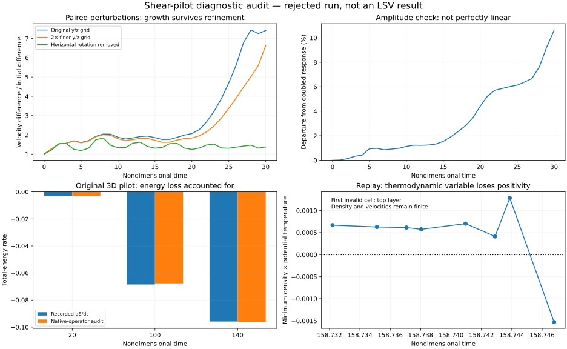

← Gallery · Completed beta/control channel runs
Why the new shear pilot failed
Failed validation, not an LSV result. The unheated jet pilot failed after 27m17s on Unity. Its last finite diagnostic was t=158.5 of the intended 250. Neither long heated run was released.
Actual saved fields at t=0–158. Vorticity above passive tracer; three depths z/H=0.19375, 0.49375, 0.89375. Fixed asinh scales throughout. Full vorticity includes the imposed jets. The movie marks rejected output after the Mach acceptance threshold was crossed. Time is nondimensional.
Deeper audit: what is now established
The early overturning has a credible physical explanation, but the late evolution is not trustworthy. A guarded replay now localizes the thermodynamic failure, and native discrete operators account for the energy loss. Both long production runs remain unsubmitted.

1. The first captured failure is thermodynamic
Restarting the original t=150 checkpoint with unchanged physical terms, the state-update guard stopped at t=158.7468. Density times potential temperature, ρθ, became negative in exactly one uppermost-layer cell (minimum −0.001533). Pressure and temperature became NaN at that same cell. Density, all velocity components and viscosity remained finite; density remained positive everywhere. The later acoustic-substep exception was a downstream symptom.
Immediately before this event, minimum temperature was already as low as 0.00286. This identifies loss of thermodynamic positivity in the depleted cap. Monitoring observes state updates, not every internal arithmetic operation: it does not establish whether source integration, scalar transport or their interaction first drove ρθ below zero. The replay changes diagnostic scheduling and is not bitwise identical to the original trajectory. Its first refreshed output agrees closely with the original t=150 state.
2. The energy loss is real and largely explained
The audit differentiates the native staggered-grid energy functional and evaluates the actual momentum/scalar fluxes, pressure/gravity, Coriolis, viscosity/heating, entropy diffusion and jet forcing. An independent directional-derivative check agrees to better than 10⁻⁸ relative error. At saved states, its instantaneous energy rate agrees with the recorded finite-time rate:
| Time | Recorded dE/dt | Native audit | Difference |
|---|---|---|---|
| 20 | −0.00300246 | −0.00295247 | 1.66% |
| 100 | −0.0684692 | −0.0676785 | 1.15% |
| 140 | −0.0958468 | −0.0961320 | 0.30% |
At t=100, numerical kinetic-energy loss from momentum transport is −0.07870, compared with +0.01009 jet work. The pressure/thermodynamic-advection mismatch is +0.000613, Coriolis work +0.000318, and viscous-work/heating mismatch −0.00000415. Entropy diffusion sums to roundoff zero globally. Thus the dominant global deficit is kinetic energy dissipated by the chosen transport discretization without being returned as heat. The final accumulated deficit is 1.35 times the initial kinetic energy.
This finding applies to this configured potential-temperature/WENO implementation. It is not a finding that every Breeze formulation fails. Chan & Mayr's strongly conservative total-energy discretization is a material difference. This audit accounts for instantaneous rates at selected states; it is not a fully time-integrated budget proof. Nor does it show that global energy loss alone causes the terminal positivity failure.
3. Perturbation growth survives refinement, but its rate is not converged
Seven short x-uniform runs subtract matched unperturbed trajectories from small perturbed trajectories. The probe is a smooth divergence-free mass-flux perturbation with velocity RMS 10⁻⁵; one coarse case doubles it. All these tests disable entropy diffusion and external heating, retain viscosity and viscous heating, and retain mean-jet relaxation. The refined grid doubles y/z resolution from 8×256×80 to 8×512×160 while holding the Smagorinsky mixing length fixed. The rebalanced control removes horizontal rotation while retaining f₀ and beta. All seven reach t=30.
| Case | Velocity-difference amplification at t=30 | Fitted amplitude rate, t=15–30 |
|---|---|---|
| Original y/z grid | 7.42× | 0.1176 |
| Twice-finer y/z grid | 6.64× | 0.0991 |
| Horizontal rotation removed | 1.37× | Oscillatory; no sustained growth fit |
The growth persists and is substantially stronger with tilted rotation, supporting the symmetric/slantwise-instability interpretation. However, doubling the initial probe departs from an exactly doubled response by 10.6% at t=30. Fitted rates differ by about 16% between grids and depend on the fitting window. These are responses about an evolving base flow, not a converged eigenvalue measurement.
4. Additional limitations caught in the audit
- The selected constant-coefficient Smagorinsky closure does not suppress mixing in stable stratification. Its entropy flux redistributes cap heat even with no bottom heating. Restoring cap relaxation alone would not certify the closure.
- The installed acoustic substep estimator assumes a nominal temperature of 300, whereas these nondimensional fields have temperatures of order 1–5. This overestimates acoustic work and adds cost. It is conservative and does not explain the cooling. Shared dependencies were not modified.
- A jet constant along the tilted rotation axis is an interior balance candidate, but generally has nonzero vertical shear at the stress-free top/bottom. It is not a validated drop-in repair; boundary compatibility must be solved explicitly.
Consequence: the movie is useful for diagnosing a shear/cap adjustment, not as evidence that GRS-like anticyclones are stable. Before a long rerun, the jet/wall/thermal equilibrium and the energy/positivity behavior need separate bounded validation. No long rerun has been launched.
Unity jobs: native audit 2138128 (10m08s CPU), paired tests 2138365 (13m16s GPU, including validation/compilation), forensic replay 2138558 (9m14s GPU, including validation/compilation), aggregate analysis 2138829 (14s CPU). The forensic scheduler job completed because the driver intentionally caught and recorded the invalid-state stop; the replay integration stopped on invalid thermodynamics at t=158.7468. CPU and GPU driver advance/output/restart checks passed before these diagnostics. Raw fields remain on Unity.
Full aggregate evidence · Native audit and analysis · Paired/refinement code · Guarded replay code
Initial diagnosis and thermal controls
- Force balance was checked; full three-dimensional shear stability was not. With tilted rotation, the depth-independent jet requires a cross-channel entropy gradient. In the nearly neutral deep layer this gives negative Ertel potential vorticity in the anticyclonic-shear band. The initial saved field has negative PV in 26.85% of deep-layer cells. The early motion is predominantly a north–south/vertical overturning, consistent with symmetric instability. A horizontal Rayleigh–Kuo screen cannot exclude this.
- “Unheated” also disabled cap restoration. The same heat switch disabled bottom forcing and upper temperature relaxation, but retained SGS entropy diffusion. The stable cap was not an equilibrium of that diffusion operator. Minimum temperature fell from 0.944 to 0.0156, with the coldest cell at the top in every saved full-field checkpoint. The resulting low sound speed contributed to the increasing Mach number.
- The release criterion was not a live stop. Mach first exceeded the required 0.5 limit at t=51.5. The runtime allowed Mach up to 3, so the pilot continued unnecessarily. The separate diagnostic driver enforces 0.5 during integration. The original failed source is retained unchanged for reproducibility.
Short controlled checks
Four x-uniform cross-sections on an 8×256×80 grid retain the pilot's dx, dy and dz, jet strength, f₀ and beta. Initial random perturbations are zero to isolate symmetric adjustment. The no-horizontal-rotation case is rebalanced and keeps the same vertical f₀; it is a diagnostic ablation, not a proposed production model. CPU and GPU advance/output/restart checks passed. All scientific work stayed on Unity.
| Diagnostic variant | Initial minimum T | Minimum T at t=30 | Cross-jet/vertical RMS speed at t=30 |
|---|---|---|---|
| Original diagnostic setup | 0.94371 | 0.84424 | 0.007422 |
| Half maximum time step | 0.94371 | 0.84423 | 0.007422 |
| Entropy diffusion disabled | 0.94371 | 0.94271 | 0.011582 |
| Horizontal rotation removed; rebalanced | 0.95548 | 0.86610 | 0.000830 |
All four tests completed. Halving the maximum time step leaves the response essentially unchanged. Disabling entropy diffusion prevents almost all of the top cooling but does not prevent overturning. Removing the horizontal rotation component reduces cross-jet/vertical motion about ninefold while cooling persists. Together these support two distinct setup problems. The GPU allocation lasted 7m53s, including validation and compilation.
These short tests diagnose early response and thermal drift. They do not establish convergence of the late three-dimensional breakdown or demonstrate a stable replacement jet.
Why negative PV appears here
Write h=2Ω cos(latitude). In the neutral part of this particular initial state, the quantity with the sign of Ertel PV is
(curl u + 2Ω) · ∇log θ = −h² Uy/(g−hU).
It is negative where Uy>0, even though f−Uy remains positive. Thus the ordinary vertical absolute-vorticity check misses the instability. This is consistent with the full-rotation symmetric-stability framework of Fruman & Shepherd (2008). The finite grid introduces additional small stratification errors, so this analytical diagnosis is not an exact eigenmode calculation for the discrete model.
Limits of the diagnosis
The deeper audit above supersedes the earlier unresolved energy residual and localizes the terminal thermodynamic failure. It does not validate the nonlinear endpoint, a replacement jet, an anticyclonic LSV or a GRS analogue. The long shear/control integrations remain blocked.
Controlled-check results · Original saved-field diagnostics · Movie validation and scales · Diagnostic code